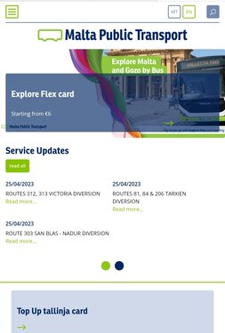
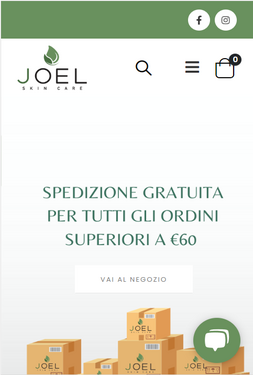

Repetition
Malta Public Transport
publictransport.com.mt In this page, the repetition is used with the colors, the font, and the paragraphs with the same structure. In the all website, the full menu and the structure of the content are repeated too. It creates a all that makes the user experience great.
White Space
Joel Skin Care
joelskincare.com In this simple page, the information is easy to read with the using of withe space and clean desing. This page communicates a clear message to the user. He or she can also quickly go where he or she wants with a clear view of options.